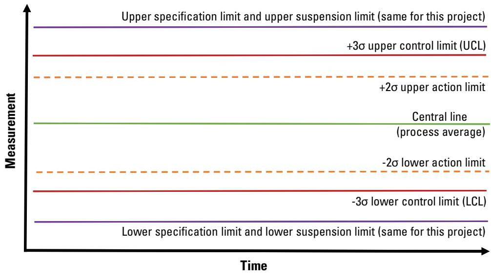
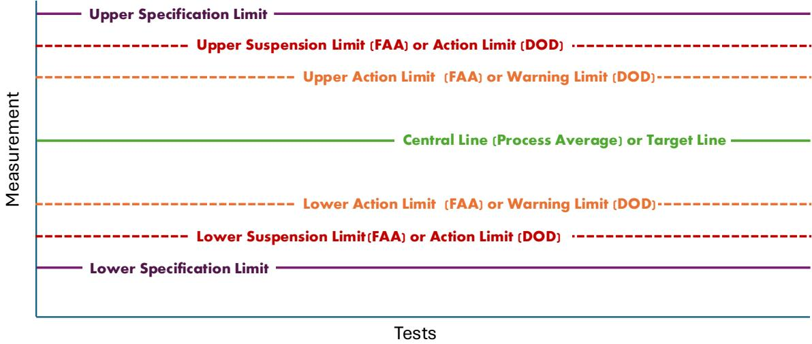
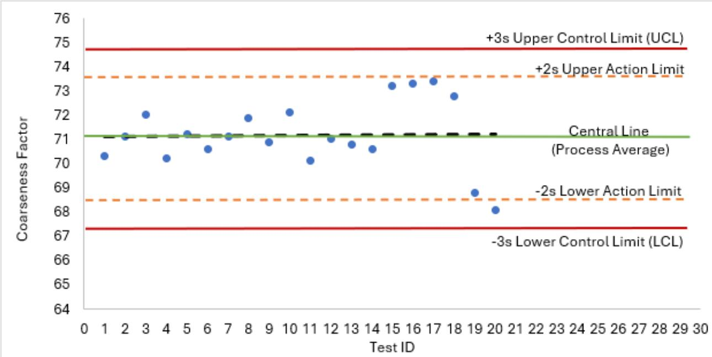
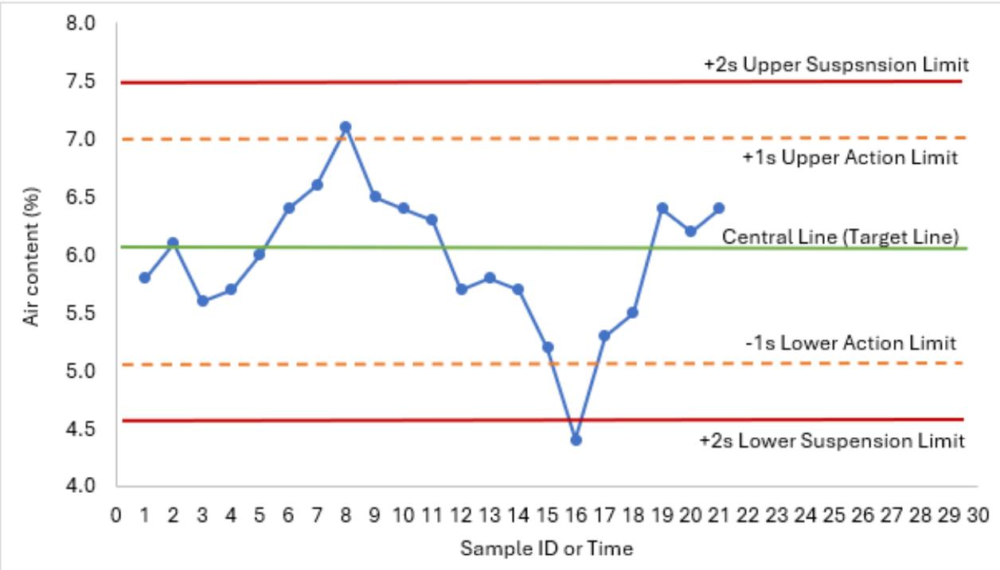

Control Charts for Specification Compliance
Control Charts for Specification Compliance are a quality‑control tool used on concrete pavement projects to continuously monitor the consistency of the concrete mix by plotting real‑time measurements of key material and process parameters—aggregate gradation, coarseness factor, workability factor, slump, and air content—against FAA/DOD specification limits[1]. The charts embed defined action and suspension limits; when a value approaches an action limit a corrective adjustment is required, and if a suspension limit is exceeded production must be stopped and the process re‑evaluated, with any out‑of‑control point repeated immediately to confirm deviation[1][3]. By tying each plotted metric to its specification provision, documenting trends, corrective actions, and updates to control‑chart tables, the system ensures that both hard‑metric test results and soft‑metric observations remain within acceptance criteria throughout production and into post‑construction performance checks[1].
Sources (7)
Purpose and quality objectives
Control charts in the specification compliance plan are used to monitor the concrete mixture’s consistency by tracking key material and process parameters such as aggregate gradation, coarseness factor, workability factor, slump, and air content. Control charts are applied to the quantitative test results that reflect concrete pavement quality—such as compressive‑strength measurements, aggregate gradation data, and other hard‑metric values—as well as observations of soft‑metric conditions like segregation or moisture tracks. The charts include defined control limits; when a measured value approaches or exceeds these limits, FAA/DOD specifications prescribe corrective actions ranging from process adjustment to suspension of work, ensuring material properties and workmanship remain within acceptance criteria. [1]
[1] — Ch. 6 (pp. 312–313), Ch. 7 (pp. 355–356)
Control Charts for Specification Compliance are used to satisfy the quality requirement that concrete mix properties stay within the defined specification limits throughout production. By continuously tracking leading‑indicator characteristics such as aggregate gradation, coarseness factor, workability factor, slump and air content, the charts embed action limits (indicating when corrective actions are necessary) and suspension limits (indicating when processes should be stopped and adjusted before continuing production). When a test result does not conform to the control limits or appears as an outlier, it must be repeated immediately and any out‑of‑control condition triggers defined corrective procedures, including stop‑work evaluation and material replacement. The charts are also updated—adding or modifying tables and associated response actions—whenever non‑specification material is encountered in the field, ensuring prompt identification and correction of nonconforming concrete and maintaining overall specification compliance. [1][3]
The figure below illustrates the typical central line representing the process average along with the associated action and suspension limits.

Typical central line (process average) and limits on a control chart [3]The figure displays a schematic of a control chart with the vertical axis representing measurement and the horizontal axis representing time. It illustrates the statistical boundaries used to distinguish natural process variation from assignable cause variation, specifically showing a central line for the process average flanked by upper and lower control limits at three standard deviations (3σ).
[1] — Ch. 6 (pp. 312–313), Ch. 7 (pp. 355–356), App. A (p. 383); [3] — App. D (p. 146)
Scope and applicability
Control Charts for Specification Compliance are applied in concrete pavement projects to monitor the key mix‑design characteristics of the constituent materials and the mixing/placement process. They are used for aggregate gradations, coarseness factor, workability factor, slump and air content—metrics that can be measured in real time while the concrete is being produced and placed. The charts follow FAA or DOD specification limits and trigger corrective actions or suspension of work when those limits are approached or exceeded, ensuring the pavement meets acceptance criteria before it hardens. [1]
The figure below illustrates a control chart for the coarseness factor using current specification action and suspension limits.
 Control chart for CF using current specification action and suspension limits. [1]
Control chart for CF using current specification action and suspension limits. [1]
The figure displays a control chart plotting the Coarseness Factor against Test ID, featuring horizontal lines that represent the Upper Suspension Limit, Lower Suspension Limit, Upper Action Limit, and Lower Action Limit. The chart includes a green line indicating the “Value from Production Proportions” which serves as a target for the blue data points representing test results.
[1] — Ch. 6 (pp. 312–313)
Test methods and procedures
Valid use of control charts for specification compliance requires that the testing personnel be certified and that the same qualified technician or team conduct the daily field tests, ensuring consistent application of methods. The QC manager must monitor test trends to identify when equipment calibration is required, and any result that falls outside the established control limits must be repeated immediately. No specific environmental controls are mentioned for maintaining chart validity. [1]
[1] — Ch. 7 (pp. 355–356)
Sampling and testing frequency
Samples and measurements used in control‑chart compliance must follow a documented sampling plan that references the applicable FAA/DOD specification limits for each characteristic (e.g., aggregate gradation, slump, air content). The plan should define test methods, testing frequency and interval timing so that data are collected often enough to keep the contractor aware of process status, reveal trends early, and trigger action or suspension limits before out‑of‑spec work occurs. By tying each metric to its specification provision and establishing clear corrective‑action thresholds, the sampling strategy ensures the selected measurements accurately represent the material, process, lot or completed pavement segment. [1]
[1] — Ch. 6 (pp. 312–313)
Quality control and process monitoring
Control charts used for specification compliance should track those process‑level characteristics that can be measured while the concrete is being placed, because they act as leading indicators of mixture consistency. The CQCP therefore monitors aggregate gradations, moisture content, coarseness factor (CF), workability factor (WF), slump and air‑content, each with control limits defined in FAA/DOD specifications; when a measured value approaches its action or suspension limit, corrective actions or work stoppage are triggered. By sampling these parameters at appropriate intervals and applying the prescribed test methods, the contractor can adjust mix proportions in real time to keep the pavement within acceptance criteria. [1]
The following figure illustrates the allowable limits box for the coarseness factor and workability factor parallelogram.
 CF and WF parallelogram showing the allowable limits box adjusted to reflect tolerance limits, with production paving data plotted within. [1]
CF and WF parallelogram showing the allowable limits box adjusted to reflect tolerance limits, with production paving data plotted within. [1]
The figure displays a scatter plot of Workability Factor versus Coarseness Factor, featuring red lines that define an action limit boundary for concrete mix consistency. The chart identifies specific test results near the action limit and demonstrates that while some lots appear within control limits on other charts, they fall outside acceptance limits when these tighter tolerances are applied.
[1] — Ch. 6 (pp. 312–313)
The control‑chart procedure requires a process adjustment whenever any measured characteristic—such as aggregate gradation, coarseness factor, workability factor, slump, or air content—reaches its defined action limit, and it mandates suspension of production when a measurement hits the suspension limit. Trends that show values moving toward these limits, repeated out‑of‑control points on the chart, or test results that exceed the specification provisions listed in the CQCP also trigger additional sampling and testing to confirm the deviation. When a field test result falls outside its established control limits or is identified as an outlier, the test must be repeated immediately and any non‑conforming outcome should trigger corrective action; similarly, observations such as moisture tracks, segregation signs, or repeated out‑of‑spec core results are concrete signals that the underlying process needs adjustment, equipment calibration, or other mitigation before work can continue. [1]
The figure below illustrates the CF and WF parallelogram to visualize how test results compare against the allowable limits box.
 CF and WF parallelogram, showing the allowable limits box (green) and the data from tests of lots of production paving provided the figure.2. [1]
CF and WF parallelogram, showing the allowable limits box (green) and the data from tests of lots of production paving provided the figure.2. [1]
The figure displays a plot with Coarseness Factor on the horizontal axis and Workability Factor on the vertical axis, featuring blue dots representing test values for production paving lots. A green rectangle labeled “Mixture Design CF/WF” encloses a red crosshair marker and several data points, visually defining the target range for the mixture design. The plot demonstrates how field test values are monitored against these defined limits to ensure that “the target CF and WF determined at the test section represent the values to be maintained during production.”
[1] — Ch. 6 (pp. 312–313), Ch. 7 (pp. 355–356)
Nonconformance and corrective action
When inspection or testing shows a characteristic outside its control limits, the guides require an immediate repeat of the test – “When, not if, a test result does not conform to the control limits or suggests that it is an outlier, the test should be repeated immediately.” – and then invoke the defined action‑limit and suspension‑limit provisions. Depending on severity, the response may be (1) adjustment of mix, means, or methods to reduce variability; (2) suspension of work when a suspension limit is exceeded – “If the measurement exceeds a suspension limit, work must be stopped and the process re‑evaluated before production can resume.”; or (3) remedial work on the nonconforming material. In all cases the control‑chart documentation must be updated: relevant tables are added or modified and any associated situations or actions in those tables are revised to reflect the corrective measures – “Add/modify tables for control charts and modify situations/actions in the tables as appropriate.” [1][3]
The following figure illustrates typical control chart limits used in FAA and DOD projects.

Typical control chart limits for FAA and DOD projects. [1]The figure displays a schematic of horizontal lines representing various thresholds on a quality-control chart, including specification limits at the outermost boundaries and central target lines in the middle. Between these boundaries are dashed lines labeled as “Action Limit” or “Warning Limit” (orange) and “Suspension Limit” or “Action Limit” (red), which correspond to the FAA and DOD specifications respectively.
[1] — Ch. 6 (pp. 312–313), Ch. 7 (pp. 355–356); [3] — App. D (p. 146)
Work should be corrected whenever a soft‑metric trend indicates the process is approaching a non‑conformance threshold or when an observed condition such as segregation points to a controllable cause; any test result that falls outside the established control limits or appears as an outlier must be retested immediately; if after corrective actions the work still meets the owner’s intent, it may be accepted with adjustment, but if the deviation cannot be resolved and the hard metric fails, rejection is warranted. Investigation is required whenever the source of a soft‑metric deviation is unclear to determine whether process correction or method modification is needed. [1]
[1] — Ch. 7 (pp. 355–356)
Documentation and reporting
Control Charts for Specification Compliance must record the test results and methods for each measured characteristic—such as aggregate gradations, coarseness factor, workability factor, slump and air content—tied to the applicable FAA or DOD specification provisions. The documentation must include the sampling plan, testing frequency, and intervals that allow real‑time trend analysis, together with clearly defined action limits that trigger corrective adjustments and suspension limits that require stopping work for process evaluation. It also needs to detail the decision authority and describe the specific corrective actions (process adjustment, work suspension, or remedial work) required when a characteristic falls out of control. [1]
The figure below illustrates a control chart for the coarseness factor that utilizes statistically computed central lines along with defined action and control limits.

Control chart for CF using statistically computed central line and action and control limits. [1]The figure displays a statistical process control plot tracking the Coarseness Factor against Test ID, featuring a Central Line representing the Process Average alongside Upper and Lower Action Limits at ±2s and Control Limits at ±3s.
[1] — Ch. 6 (pp. 312–313)
Quality records for control‑chart compliance are generated in accordance with the CQCP sampling plan and must capture each measured characteristic—aggregate gradation, moisture content, workability factor, slump, air content, etc.—and compare them to specification‑based control limits. The CQCP should outline a procedure for evaluating data, including analysis methods and tools, and timely communication of the results. Once collected, the records are promptly documented and shared with QA, the owner, and the designated decision authority. The procedures should include action limits (indicating when corrective actions are necessary) and suspension limits (indicating when processes should be stopped and adjusted before continuing production). The QCM reviews the data against these established limits; when, not if, a test result does not conform to the control limits or suggests that it is an outlier, the test should be repeated immediately and any breach triggers the required corrective actions. All breaches and trend information are recorded, providing the evidence needed for acceptance decisions and creating a historical database that supports future performance evaluation, equipment calibration, and training. The QCM must track resulting trends for use in educating a new person or defining when equipment may need calibration. [1]
The following figure illustrates an example control chart with upper and lower action and suspension limits established using standard deviations.

Example control chart showing upper and lower action and suspension limits established using standard deviations. [1]The figure displays a time-series plot of air content measurements against defined specification boundaries, including a central target line, upper and lower action limits, and upper and lower suspension limits.
[1] — Ch. 6 (pp. 312–313), Ch. 7 (pp. 355–356)
Relationship to long-term performance
After the pavement is placed, the control‑chart program must be extended to include lagging quality checks that can only be performed once the concrete has cured, such as compressive strength tests and surface smoothness measurements taken days or weeks after each segment is finished. These post‑construction results are plotted against the same action and suspension limits defined in the FAA/DOD specifications; if a value approaches or exceeds those limits, the prescribed corrective actions—ranging from process adjustments to work suspension and remedial repair—are triggered to bring the pavement back into compliance. [1]
[1] — Ch. 6 (pp. 312–313)